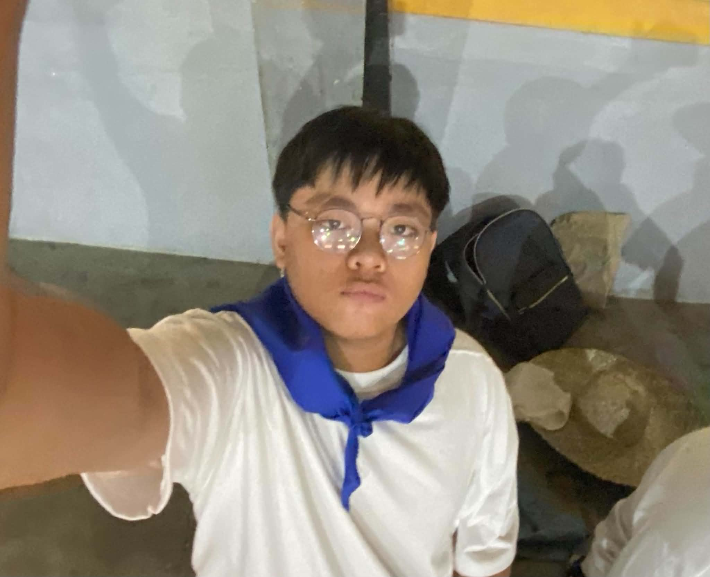

PROJECT LEADER / LEAD DEVELOPER
Led and oversaw the creation of the website Content. Helped and Developed the struture Anddesign of the Website.
FRONT END DEVELOPER
in Charge of the website's design and visual layout. Crafted the theme, colors, and graphics inspired by Ancien Egypt to make the site engaging and user-friendly
CONTENT ORGANIZER / RESEARCHER
Gathered and organized all the key information about Ancient Egypt. She arrange and Gathered the topics about the civilization's major sucess, and daily life in the civilization.
CONTENT RESEARCHER
Conducted in-depth research on the history and culture of Ancient Egypt, focusing on the Nile River, and the Pyramids.
CONTENT SPEAKER / REPORTER
Serves as one of of thr Primary Voice's during the Presentation. He is responsible for clearly reporting and explaining the team's findings about Ancient Egypt from the Website.